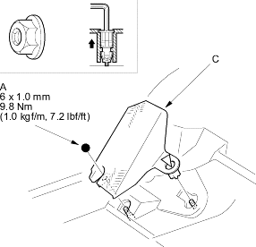
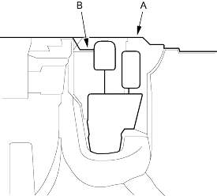
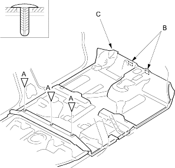

LHD
SRS components are located in this area. Review the SRS component locations (see page 23-24) and the precautions and procedures (see page 23-25) in the SRS section before performing repairs or service. Refer to the '01 Civic Shop Manual, P/N 62S5A00 on this CD.
NOTE:
- Put on gloves to protect your hands.
- Take care not to damage, wrinkle or twist the carpet.
- Be careful not to damage the dashboard or other interior trim pieces.
- Remove these items, refer to the '01 Civic Shop Manual, P/N 62S5A00 on this CD:
- Front seats, both sides (see page 20-229)
- Rear seat cushion, both sides (see page 20-237)
- Kick panels, both sides (see page 20-206)
- Front door sill trim, both sides (see page 20-206)
- Rear door sill trim, both sides (see page 20-206)
- Dashboard centre lower cover (see page 20-217)
- Driver's dashboard under cover (see page 20-216)
- Passenger's dashboard lower cover (see page 20-220)
- Parking brake cover (see step 3 on page 20-213)
- Remove the nut (A) and using a hex wrench, release the clip (B), then remove the footrest (C).
Fastener Locations
A  : Nut, 1B
: Nut, 1B  : Clip, 1
: Clip, 1

- Using a utility knife, cut the carpet (A) under the heater area (B) on the driver's side, then pull back the carpet.

- Remove the clips (A) and release the fasteners (B), then remove the carpet (C).
Fastener Locations
A : Clip, 3

- Remove the rear floor carpet, refer to the '01 Civic Shop Manual, P/N 62S5A00 on this CD (see step 6 on page 20-214)